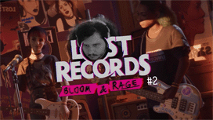
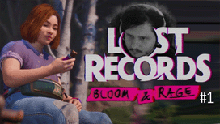

I do quite a bit of streaming! My goal with these is to provide a high quality accompaniment to the game itself, and also to show it off. I try to take things slowly and appreciate the myriad details left in the environment, really soaking up everything in a given area that I can find before moving on. I typically play narrative adventure games and role playing games, but I appreciate all games, so there are dashes of something else here and there too. If that sounds like the kind of stream for you, hop aboard!
| Thumbnail | Date | Title | Links |
|---|---|---|---|
|  | 2025/03/11 | LET'S PLAY | Lost Records: Bloom & Rage | Pt. 2: Back in '95 | Magnet, YouTube |
|  | 2025/02/18 | LET'S PLAY | Lost Records: Bloom & Rage | Pt. 1: A Minor Suburban Tragedy | Magnet, YouTube |